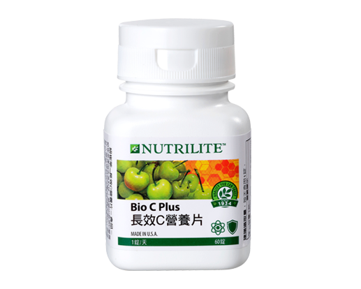

<div class="product_detail_content">
    <div class="picture">
        <div id="owl-demo" class="owl-carousel owl-theme">
            <div class="item"><span class="volume">60錠</span></div>
        </div>
    </div>
    <div class="infomation">
        <h3>長效天然C營養片<br><span class="small">長效C保護，讓你不再趕流行</span></h3>
        <p>維生素C具抗氧化作用，促進膠原蛋白生成，讓肌膚Q彈緊緻；還能強化骨骼牙齒，但水溶性維生素C會自然流失，紐崔萊運用先進科技，發展長效配方，天天為你補充營養，從裡到外調理出好體質！</p>
        <h4>產品特色</h4>
        <ul class="list_dot">
            <li>每錠含500毫克的維生素C，符合現代人所需</li>
            <li>長效８小時設計，吸收有效率</li>
            <li>含有來自針葉櫻桃的天然維生素Ｃ</li>
            <li>含天然柑橘生物類黃酮，助於維生素Ｃ的吸收</li>
            <li>含針葉櫻桃濃縮素，提供多種珍貴的植物營養素</li>
        </ul>
        <!-- <a class="download" href="pdf/products_bio_c_plus.pdf" target="_blank">營養成分PDF</a> -->
        <div class="btnWrap">
            <div class="showDetail">營養成分</div>
            <a class="download" href="pdf/products_bio_c_plus.pdf" target="_blank">下載PDF</a>
            <a class="buynow" href="https://shop.amway.com.tw/%E7%87%9F%E9%A4%8A%E4%BF%9D%E5%81%A5/%E7%B6%AD%E7%94%9F%E7%B4%A0-%E7%A4%A6%E7%89%A9%E8%B3%AA%E7%B3%BB%E5%88%97/%E9%95%B7%E6%95%88C%E7%87%9F%E9%A4%8A%E7%89%87/p/2573" target="_blank">立即購買</a>
        </div>
        <div class="detailTable">
            <table class="tableizer-table">
                <thead>
                    <tr class="tableizer-firstrow">
                        <th>重要營養素</th>
                        <th>每錠含</th>
                    </tr>
                </thead>
                <tbody>
                    <tr>
                        <td>維生素C </td>
                        <td>500 毫克</td>
                    </tr>
                    <tr>
                        <td>柑橘生物類黃酮</td>
                        <td>35 毫克</td>
                    </tr>
                </tbody>
            </table>
        </div>
    </div>
</div>
